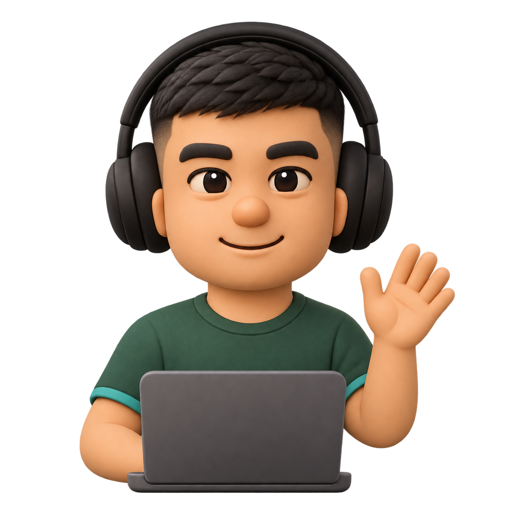

Локальная проверка · Исходный GLB сохранён
Проверка модели вашего аватара
Слева — исходная картинка. Справа — настоящий скачанный GLB. Поворот: мышью, пальцем или стрелками клавиатуры.
Исходный аватар

Референс из портфолио, без изменений.
Скачанная 3D-модель
Загрузка GLB…
Проверяем вращение, текстуры и внутреннюю структуру. Анимация жестов в этой проверке не добавляется.